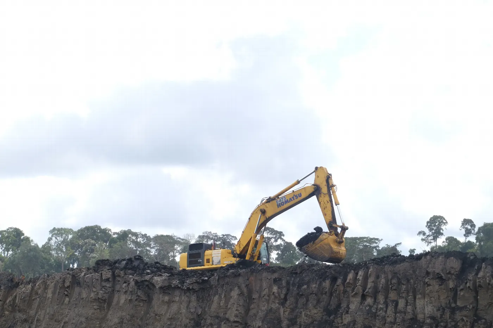
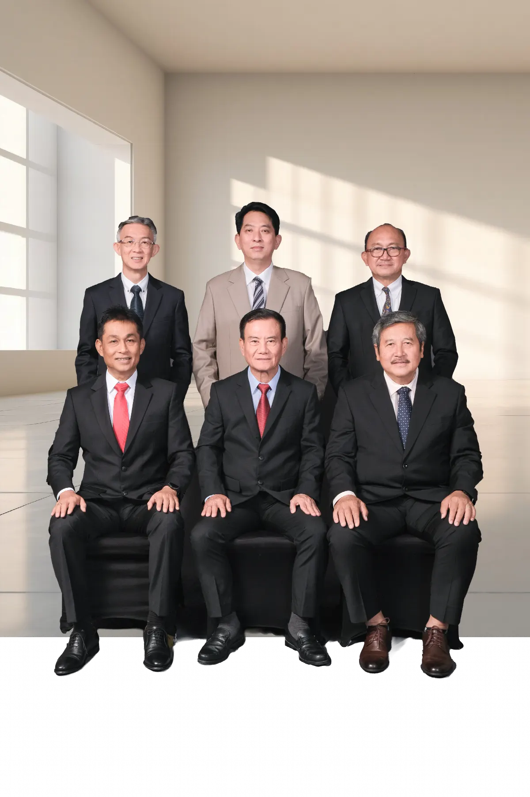

Tumbuh bersama bangsa.To grow with the nation.

Dari penunjang migas ke batubara.From oil and gas support to coal.

PT Paragon Karya Perkasa Tbk berawal sebagai PT Perdana Karya Kaltim pada 1983, penunjang kegiatan migas dengan Kalimantan Timur sebagai wilayah operasi utama.PT Paragon Karya Perkasa Tbk began as PT Perdana Karya Kaltim in 1983, supporting oil and gas operations with East Kalimantan as its principal operating area.
Perusahaan mendukung operasi PT Vico Indonesia dan Total E&P Indonesie, disusul Salamander Energy Ltd pada 2011. Operasinya juga menjangkau Blok Kangean dan Pagerungan untuk PT EMP Kangean, serta Sampang, Madura, untuk Santos Energy Ltd.The company supported operations for PT Vico Indonesia and Total E&P Indonesie, followed by Salamander Energy Ltd in 2011. It also operated in the Kangean and Pagerungan blocks for PT EMP Kangean and in Sampang, Madura, for Santos Energy Ltd.
Usahanya meluas ke pengangkutan batubara pada akhir 1990-an, lalu ke pertambangan batubara dan jasa perkebunan pada 2005. Perusahaan menawarkan 20,83 persen sahamnya kepada publik dan tercatat di Bursa Efek Indonesia pada Juli 2007.The business expanded into coal transportation in the late 1990s, then coal mining and plantation support in 2005. The company offered 20.83 percent of its shares to the public and listed on the Indonesia Stock Exchange in July 2007.
PT Deli Pratama Batubara (kini PT Deli Putra Bangsa) mengambil alih 75 persen saham pada 2021. Pada 2026, Resources Global Development Limited mengambil alih 51 persen dan PT Deli Pratama Nusantara 24 persen.PT Deli Pratama Batubara (now PT Deli Putra Bangsa) acquired 75 percent of the shares in 2021. In 2026, Resources Global Development Limited acquired 51 percent and PT Deli Pratama Nusantara 24 percent.
Visi, misi, dan motto.Vision, mission, and motto.
Diambil dari halaman resmi perusahaan.Taken from the official company page.
Memberi kepuasan kepada mitra usaha.To provide satisfaction to business partners.
Mitra yang setia dan terpercaya.A loyal and trusted partner.
- Berusaha mencapai yang terbaik.Strive to achieve the best.
- Membangun kerja sama yang kuat antarkaryawan.Build strong cooperation among employees.
- Menjunjung komitmen kepada pelanggan dan mitra usaha.Uphold commitments to customers and business partners.
Perjalanan sejak 1983.Our journey since 1983.
Mengikuti halaman perjalanan perusahaan resmi.Following the official company journey page.
- BerdiriEstablished
Didirikan sebagai PT Perdana Karya Kaltim.Founded as PT Perdana Karya Kaltim.
- Berganti namaRenamed
Menjadi PT Perdana Karya Perkasa.Became PT Perdana Karya Perkasa.
- Tercatat di bursaListed
Saham tercatat di Bursa Efek Indonesia pada sektor pertambangan batubara.Shares listed on the Indonesia Stock Exchange in the coal mining sector.
- ReklasifikasiReclassified
Klasifikasi industri berubah menjadi pertambangan migas.Industry classification changed to oil and gas mining.
- Pengendali baruNew controller
PT Deli Pratama Batubara mengambil alih mayoritas saham.PT Deli Pratama Batubara acquired a majority shareholding.
- Pindah kantorOffice moved
Kantor terdaftar pindah ke Jakarta Selatan.Registered office moved to South Jakarta.
- Maksud dan tujuan diubahPurpose amended
Maksud dan tujuan perusahaan diubah.Corporate purposes and objectives were amended.
- PMHMETD
Penambahan modal dengan hak memesan efek terlebih dahulu.Capital increased with pre-emptive rights.
- Nama pengendali berubahController renamed
PT Deli Pratama Batubara menjadi PT Deli Putra Bangsa.PT Deli Pratama Batubara became PT Deli Putra Bangsa.
- Nama perusahaan berubahCompany renamed
Menjadi PT Paragon Karya Perkasa Tbk.Became PT Paragon Karya Perkasa Tbk.
- Pengendali bergantiControl changed
Pengendalian beralih ke Resources Global Development Limited dan PT Deli Pratama Nusantara.Control passed to Resources Global Development Limited and PT Deli Pratama Nusantara.
Kepemimpinan.Leadership.
Susunan sesuai halaman manajemen resmi.Composition as shown on the official management page.

Dewan KomisarisBoard of Commissioners
- Presiden KomisarisPresident CommissionerSuki
- KomisarisCommissionerYeo Tze Khern
- Komisaris IndependenIndependent CommissionerSammy Tony Saul Lalamentik
DireksiBoard of Directors
- Direktur UtamaPresident DirectorHaryanto Sofian
- DirekturDirectorBambang Subagio Wiyono
- DirekturDirectorAgus Satria Utara
Fungsi korporatCorporate functions
- Sekretaris PerusahaanCorporate SecretaryFransiska Setiawan
- Kepala Audit InternalHead of Internal AuditBagoes Adiyoga Koesasi
- Komite AuditAudit CommitteeSammy Tony Saul Lalamentik (Ketua), Ferianto, SE, MM, dan Ari BinsarSammy Tony Saul Lalamentik (Chair), Ferianto, SE, MM, and Ari Binsar
- Struktur organisasiOrganisation chartMenyusulTo follow
- Profil lengkap: pendidikan, riwayat jabatan, rangkap jabatan, afiliasiFull profiles: education, career, concurrent positions, affiliationsMenyusulTo follow
Penghargaan dan sertifikasi.Awards and certification.
Halaman penghargaan resmi saat ini menampilkan sertifikat ini. Detail publikasi tersedia di halaman sumber.The official awards page currently displays this certificate. Publication details are on the source page.

Lima prinsip GCG.Five GCG principles.
Dokumen, komite, dan whistleblowing ada di halaman Tata Kelola.Documents, committees, and whistleblowing are on the Governance page.
- TransparansiTransparency
Keputusan terbuka dan pengungkapan informasi material yang relevan.Open decisions and disclosure of material, relevant information.
- AkuntabilitasAccountability
Kejelasan fungsi, pelaksanaan, dan pertanggungjawaban organ perusahaan.Clear functions, implementation, and responsibility of company organs.
- PertanggungjawabanResponsibility
Pengelolaan sesuai peraturan dan prinsip korporasi yang sehat.Management aligned with law and sound corporate principles.
- KemandirianIndependence
Pengelolaan profesional tanpa benturan kepentingan atau tekanan luar.Professional management without conflicts of interest or external pressure.
- KewajaranFairness
Perlakuan setara atas hak pemangku kepentingan.Equal treatment of stakeholder rights.